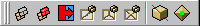
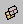
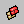
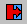
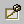
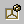
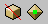

Editing Tools tool-palette
Updated 01 Mar 2011
- QuArK Information Base
- 1. Introduction to QuArK
- 1.6. Model-editor in QuArK
- 1.6.6. Tool-palettes
|
|
Editing Tools tool-palette
Updated 01 Mar 2011
|
Upper levels: - QuArK Information Base - 1. Introduction to QuArK - 1.6. Model-editor in QuArK - 1.6.6. Tool-palettes |
|
1.6.6.3. Editing Tools tool-palette |
[ - - ] |
 |
|
Index |
|
Extrude |
cdunde - 05 Dec 2007 | [ Top ] |
|
 Once selected, click this button to extrude in any of the editor's views, but the best control is done in one of its 2D views. Each time a new drag is made a new set of faces, or vertexes, will be created from that starting position to the position at the end of the drag with the new faces, or vertexes, selected. Switching from view to view between drags will change the extruded drag direction. Face mode : Extrude Selected Faces
This function only works with selected faces in the Editor's views and the
Linear Drag Handles button is active. Vertex mode : Extrude outside edges
This function only works with selected vertexes in the Editor's views and the
Linear Drag Handles button is not active. |
|
Extrude with\all |
cdunde - 05 Dec 2007 | [ Top ] |
|
 Once selected, click this button to extrude in any of the editor's views, but the best control is done in one of its 2D views. Each time a new drag is made a new set of faces, or vertexes, will be created from that starting position to the position at the end of the drag with the new faces, or vertexes, selected. Switching from view to view between drags will change the extruded drag direction. Face mode : Extrude with bulkheads
This does the same function as the 'Extrude' but leaves bulkheads
between each extrusion drag.
This function only works with selected faces in the Editor's views and the
Linear Drag Handles button is active. Vertex mode : Extrude all edges
This function only works with selected vertexes in the Editor's views and the
Linear Drag Handles button is not active. |
|
Reverse face direction |
cdunde - 13 Nov 2007 | [ Top ] |
|
 If faces of a model component have been selected, the direction they face will be reversed by clicking this button. |
|
Subdivide 2 |
cdunde - 05 Dec 2007 | [ Top ] |
|
 If faces of a model component have been selected, those faces will be split, at the middle of the longest edge, into 2 new triangles when this button is clicked. |
|
Subdivide 3 |
cdunde - 05 Dec 2007 | [ Top ] |
|
 If faces of a model component have been selected, those faces will be split, from the center to all 3 points of each selected face, into 3 new triangles when this button is clicked. |
|
Subdivide 4 |
cdunde - 05 Dec 2007 | [ Top ] |
|
If faces of a model component have been selected, those faces will be split, at one point and the middle of all 3 edges of each selected face, into 4 new triangles when this button is clicked. |
|
Face Cut tool |
cdunde - 01 Mar 2011 | [ Top ] |
|

Face Cut tool: (first button of the two) To cancel the cutting, press the RMB & LMB together then let go. This can be done at any time. Different cut patterns can be achieved sometimes, depending on the selected faces mesh structure. To test it out click on the Reverse face direction button two times, once to reverse them and once again to reverse them back to the direction they were facing before. This can rearrange their individual vertex order thus causing the change in the cut pattern. If you do not like the results just use the Undo / Redo function to the point before the faces where flipped. Keep Dupe Vertexes: (second button of the two) |
|
Copyright (c) 2009, GNU General Public License by The QuArK (Quake Army Knife) Community - http://quark.sourceforge.net/ |
[ - Top - ] |